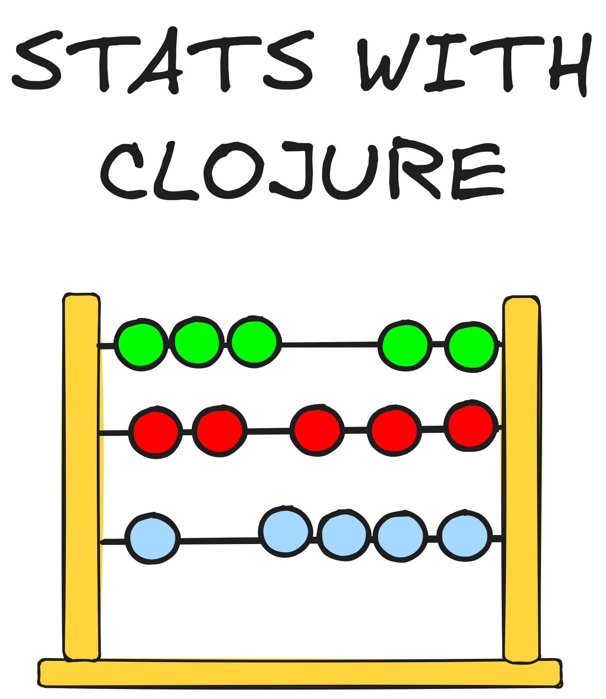

1 Index
1.1 Tooling
1.2 Getting your feet wet
- Cloning Noj v2 Getting Started
- Start with Clay
- Getting Started With Stats With Clojure
1.3 Noj and other libraries
- Noj
- Kindly
- Plotly
- Tablecloth
1.4 Visualizations
1.5 Statistical Terms
1.6 Central Tendencies
1.7 Variability
- Range
- Variance
- Standard Deviation
- Interquartile Range
- Distribution
- Skewness
- Kurtosis
- Correlation
- Covariance
- Regression
- Gini Coefficient
- Entropy
- Mutual Information
- Kullback-Leibler Divergence
- Jensen-Shannon Divergence
- Wasserstein Distance
- Earth Mover’s Distance
- Jaccard Similarity
- Cosine Similarity
- Pearson Correlation
- Spearman Correlation
- Kendall Correlation
1.8 Project
1.9 Books & References
- An Introduction to Statistical Learning
- Khan Academy Probability & Statistics Course
- Information Theory, Inference, and Learning Algorithms
- All of Statistics
source: notebooks/index.clj